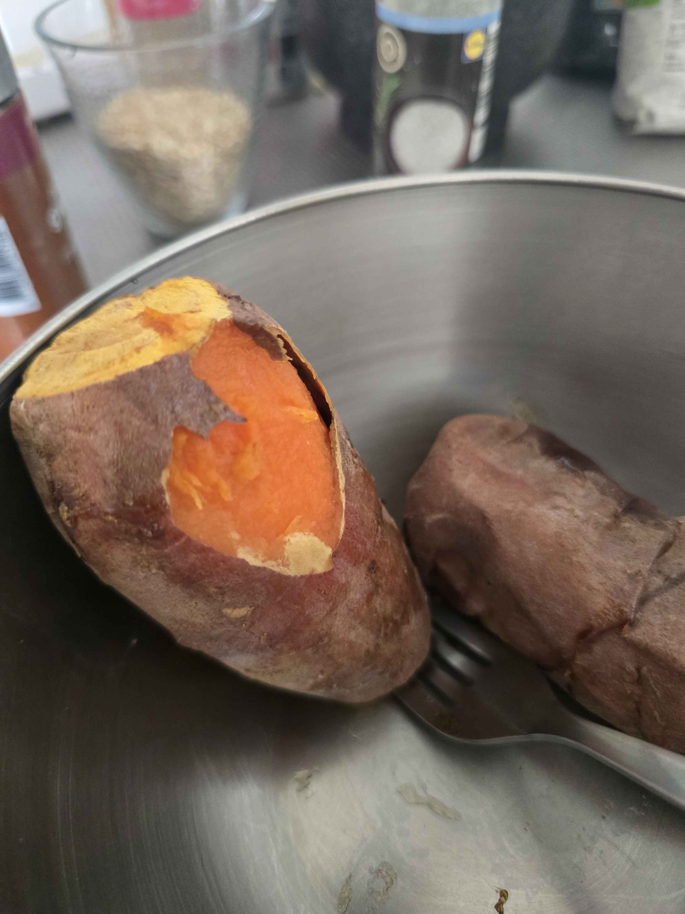

Air Fryer Sweet Potato
Description
A tried-and-true method for achieving easy-to-peel
sweet potatoes straight out of the air fryer. Just make
sure to leave a little time for them to cool, because the
temptation will be to bite right in!
Check out kkari.recipe's channel on Instagram for more
inspired cooking. I first used this method when I didn't have a freezer,
and didn't have a bag of ice handy. Very cold water from the faucet, or water
cooled in the fridge will do the trick just as well.
Ingredients
- Sweet potatoes (as many as you can fit in your air fryer)
- tsp olive oil
- enough ice or very cold water to cover the potatoes in a bowl
Steps
- Preheat air fryer to 190°C
- Rinse potatoes and pat them dry
- Cut the ends off of the potatoes
- Coat the potatoes very lightly in olive oil to prevent sticking
- Place potatoes in preheated air fryer in one layer
- Cook for 25 min.
- Prepare ice bath (or very cold water bath). Remove potatoes from air
fryer with tongs and place them in the water. Let sit for two minutes.
- Return the potatoes to the air fryer and cook for an additional 25 minutes.
- Before removing, ensure the potatoes are cooked by poking with a fork or knife and
ensuring they are soft all the way through.
- Carefully remove potatoes from the fryer and lay on a plate or pan. Carefully
cut skin away using kitchen scizzors or using a knife and fork.
- Sweet potatos are great to eat on their own with a little bit of butter and brown
sugar, or with a but of salt and some spices added on. Or use with anoter recipe, such
as this sweet potato and bean skillet.
Return to Home